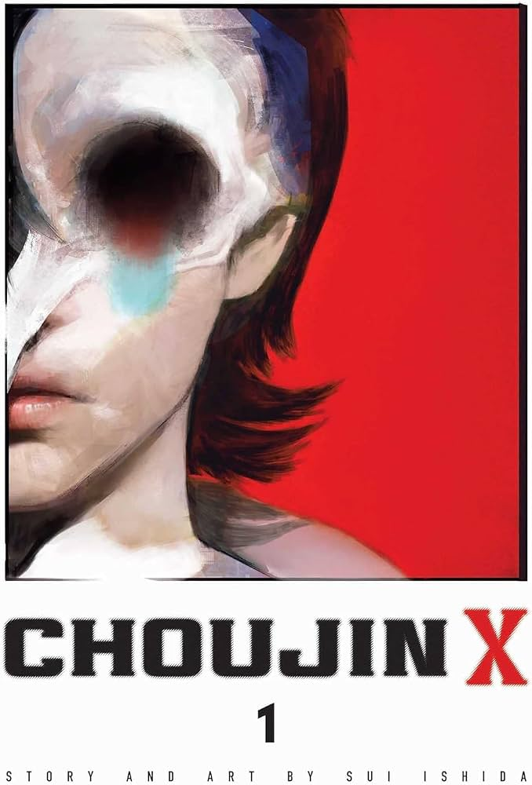

Joshua Morales is a Bronx-based new artist. He has no prior art experience; however, he grew up fascinated by the art around him—specifically, drawings and animation. The simple designs in manga and anime drew him in because of their creativity. By changing a character's features, creators can express different emotions and develop characteristics that more complex designs would struggle to convey.
A specific example appears in one of Joshua’s favorite anime, Naruto. In one of the most important fights, an animator took creative liberties and designed the characters very simply, to many people's disapproval. People criticized the animation, calling it lazy and saying it looked horrible. However, it was one of the most beautifully animated sequences, made possible by the simplicity of the artwork.
Inspired by this and many other examples, Joshua grew to love simple designs with intent. Thus, within his new art, he expresses his creativity in simple ways.
